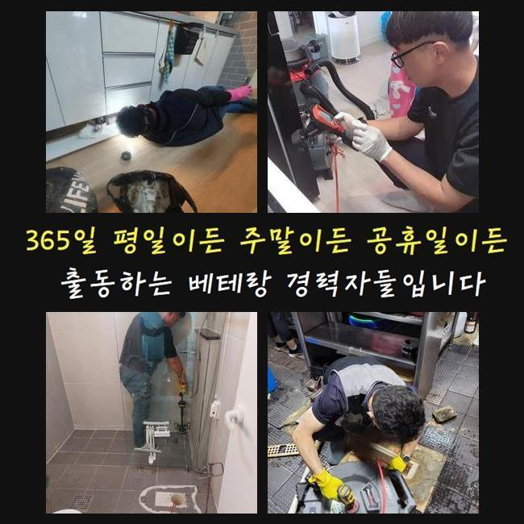
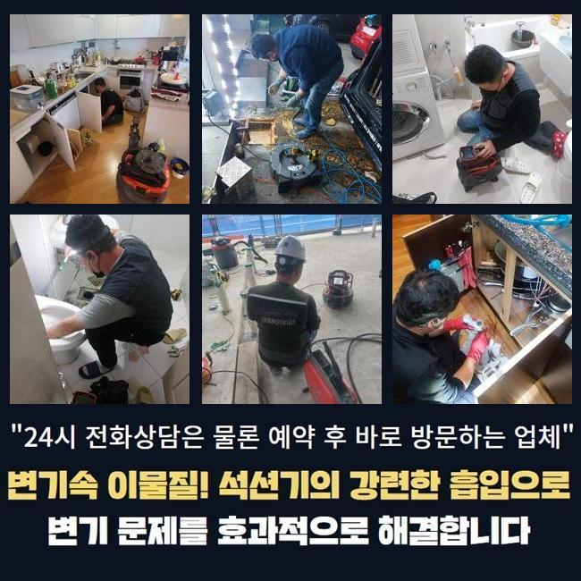
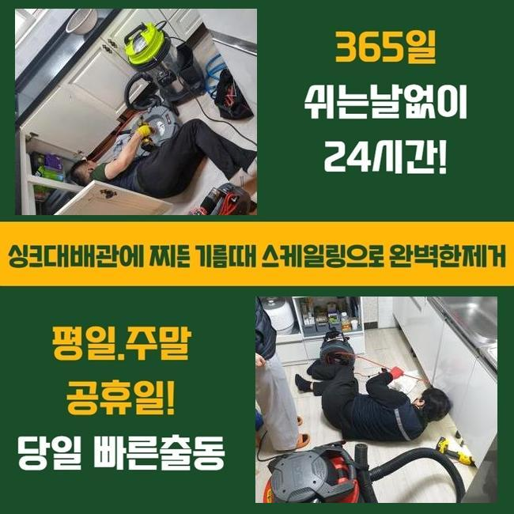
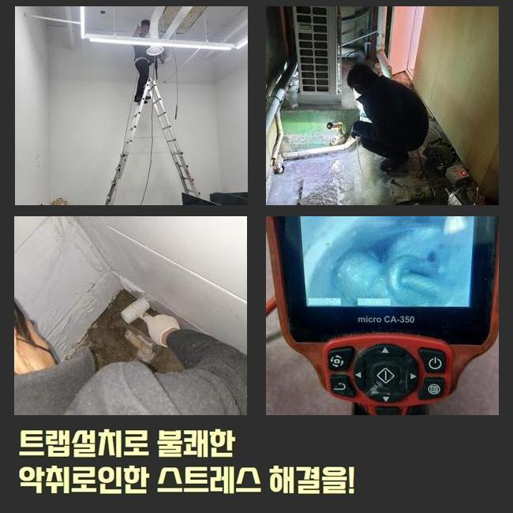
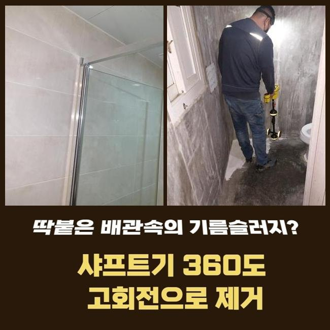
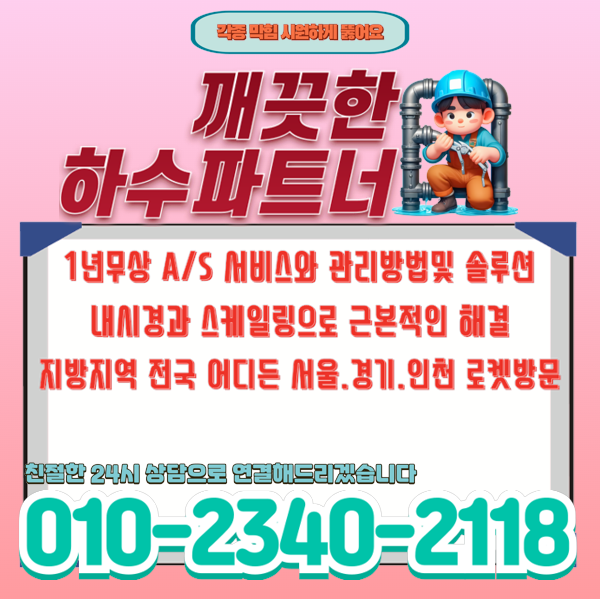

🏠 이천 관고동변기배관막힘 호법면 오수맨홀청소 부속수리
용인 변기막힘 전문 시공 후기

📋 작업 개요
- 위치: 용인
- 서비스 유형: 변기막힘, 하수구막힘, 배관막힘, 맨홀막힘, 역류해결, 배관청소, 고압세척
- 작업 일시: 2025. 2. 11. 18:45
- 업체명: 하수구수사대 (010-5615-2118)
🔍 문제 상황
이천 관고동변기배관막힘 호법면 오수맨홀청소 부속수리
얼마전 하수도가 막혀 스트레스를 받고 계셨던 고객님에게 문의가 들어왔는데요
고객의 경우 하수설비의 전문가들의 분은 아니였으나 일정 수준의 지식내용은 답습한 상황이였죠
의뢰인의 경우 배수구를 닦아주고 막히게된 지점들을 찾아보고자 관찰했지만 어디쪽이 문제인건지 인지하지 못해 저희업체에게 의뢰했던 상태였어요
자택에 도착하니 지속적인 셀프대처로 지치셨던것이 눈에 띄었어요
고객님 차원에서는 확실한 근원들을 확인할 수 없는 사례들이 상당수에요
해당 장소에서 이곳저곳을 점검하니 괄목할만한 요소는 없다고 판단했어요
그리고 바깥에 위치한 관로에서 이상이 있을 여지가 있을지모르겠다고 생각했죠
바깥쪽에 나무들이 많이 있다면 땅 밑으로 말려 들어가거나 여러 폐기물들이 흘러들어갈 확률이 있어요
다양한 요소로 인하여 바깥의 하수구가 문제를 보일 수 있어요

🔎 원인 분석
💡 전문가 진단: 정밀 진단 장비를 사용하여 슬러지의 고착 여부를 판명하고 타격/세척 작업을 실시했습니다.
고객께 현상태의 추정하고있는 기조를 안내하고 외부라인을 점검해야한다고 말씀드렸죠
고객도 이러한 내용을 듣고난 후 메인 하수 시스템 검수에 동의했습니다
시정을 시작하기에 앞서 여러 준비들을 거쳤어요
배수장애의 무엇이다! 라고 할 수가 없죠
배수구가 드러나있다면 낙엽등 주위에서 유입된 여러 폐기물들이 하수도로 축적됩니다
외측에 비가 내릴때 바깥쪽 하수시스템들의 상태들을 확인하지않을 시 문제들은 갑자기 생길거에요
또한, 나무의 땅 밑으로 침투되는 현장도 종종 있죠
배수관을 감싼다거나 심할땐 표면손실 이슈도 발생케하죠
해당 문제에서는 물빠짐이 멈춰버려 막히게되는 상황들이 생기게 될 수 있어요
그밖에 노후이슈가 있다거나 손상에도 흐름들이 막혀버려 막힐 수 있어요

🔧 작업 과정
기간에 따라 표면이 부식되면 이물이 누적되는 기반이 갖춰져요
이어서 상당수 배수장애의 주 원인들은 주기적인 관리책 실시를 신경안써서인데요
시기적절하게 소홀히 하면, 작은 여러 폐기물들이 자리를 잡으면서 막히게되는 사태가 심각수준으로 치닫을거에요
그래서 밖의 배관실황을 그때그때 점검하고 관리하는게 미리 조치할 수 있는 실질적인 방법들이라 할 수 있겠습니다
작용할만한 이유들을 인지하시고 선제적으로 예방하는게 우선과제에요
내시경기기로 외부에 위치한 설비의 실태를 체크해보았어요
내시경장비로 확인하니 하수관의 구간별로 잔해와 기름으로 인하여 엉망이 된 것이 목격되었어요
이토록 하수관로가 막혀버리면 물의 유수가 이뤄질 수가 없어서 역류문제들도 나타나기에 대응을 취하시는게 중요합니다
상태를 보고 잔해물이 누적된 지점을 목표로 해서 청소키로 했답니다
고압분사방식을 준비하여 오염된 관로를 구석까지 세척했습니다
뭉쳐있던 이물을 심층부에서 제거시키니 배수정체의 오수들이 빠져나왔어요
입구쪽에서부터 잔재들이 배출됐고 여러 폐기물들이 빠지며 집수시설로 원활히 본 모습을 되찾았어요
물이 수월하게 빠지는 형상을 관찰하며 고객도 모두 목격하셨습니다
작업들이 진행되고있는 중에 고객과도 얘기하며 여러 폐기물들이 축적되는 원인에 대해서도 말씀드려보니 의뢰인분도 따로 궁금했던 내용들을 물으셨습니다
이렇게 의뢰인분의 경우 관리를 해주는것의 중요성들을 이해함과 동시에 나중에까지 때에 맞춘 진단의 불가피성을 공감해주셨어요
마침내 청소들이 끝나고 하수관이 완전히 바로 잡히면서 의뢰자께서는 빠져나가는 과정까지 체크했죠


✅ 작업 완료
고객께도 결과와 관련한 내용을 이해시켜드리고 추후에도의 관리방법들까지 일러드렸습니다
때때로 바깥쪽을 점검해주고 필요하다면 전문성을 갖춘 해결들을 꾀하는게 좋은 방법이라고 안내드렸어요
최종적으로 고객께서 불편을 해결하게되어 다행스러웠네요
의뢰인분의 문제없는 물빠짐에 답답함이 없도록 언제라도 저희의 전문가들에게 문의하시기 바랍니다




⚠️ 하수구 배관 막힘 예방 및 관리 가이드
- ✅ 머리카락, 비닐, 물티슈 등 물에 분해되지 않는 이물질은 하수구 유입을 절대 금지해 주세요.
- ✅ 하수구 거름망을 씌우고 모여진 이물질은 주기적으로 쓰레기통에 바로 비워주셔야 합니다.
- ✅ 배관 노후가 심할 경우 이물질이 더 쉽게 걸리므로 주기적인 배관 세척(고압세척 등)을 권장합니다.
- ✅ 작업 후 1년 이내 재발 시 하수구수사대에서 무상 A/S 보증 서비스를 제공합니다.
💡 핵심 정리
- 확실한 장비 작업(내시경 점검 및 샤프트 스케일링)으로 원인을 뿌리 뽑습니다.
- 작업 후 1년 이내에 동일한 부위 재발 시 100% 무상 A/S 서비스를 보장합니다.
- 서울 · 경기 · 인천 전 지역에 24시간 언제든 긴급 출동할 수 있도록 항시 대기 중입니다.
❓ 자주 묻는 질문 (FAQ)
🚨 용인 변기막힘 문제로 고민이신가요?
정확한 원인 진단과 확실한 시공으로 재발 없는 해결을 약속드립니다.
24시간 긴급 출동 | 서울 · 경기 · 인천 전지역 | 1년 내 재발 시 무상 A/S